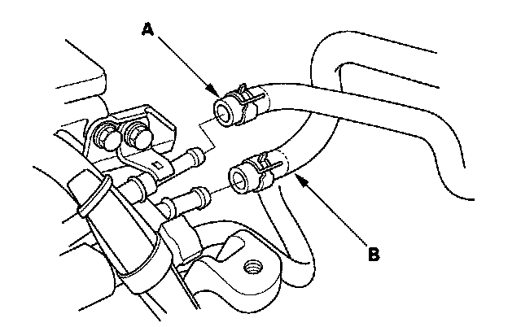
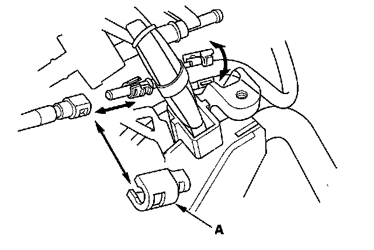
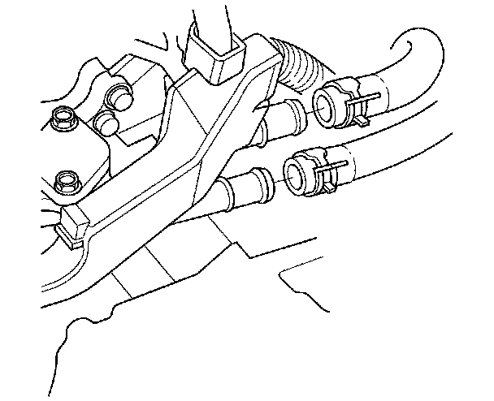
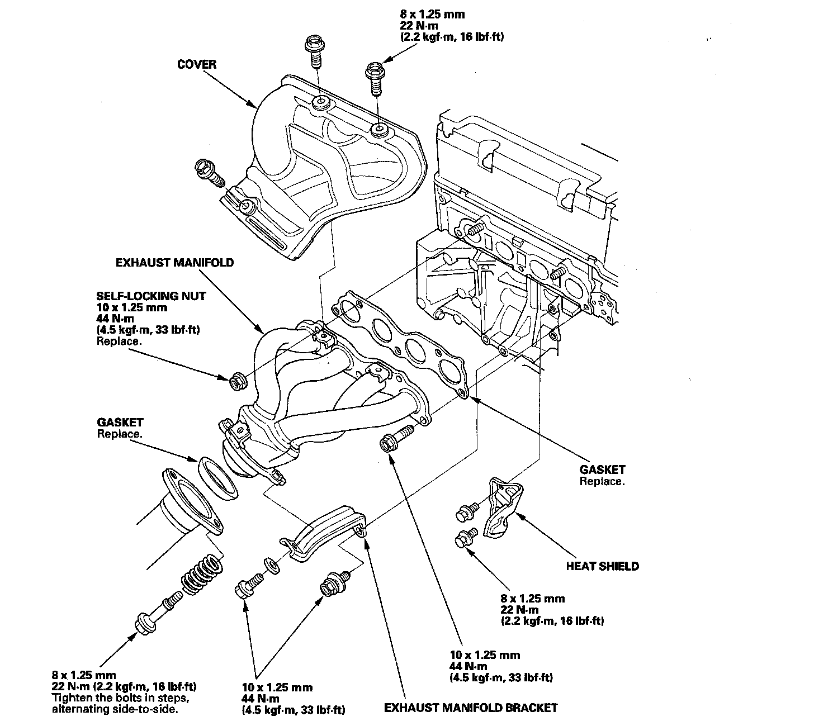

Exhaust Manifold: Service and Repair
Exhaust Manifold Removal and Installation1. Relieve the fuel pressure.
2. Loosen the drain plug in the radiator, and drain the engine coolant.
3. Remove the under-cowl panel.
4. Remove the evaporative emission (EVAP) canister hose (A) and brake booster vacuum hose (B).

5. Remove the quick-connect fitting cover (A), then disconnect the fuel feed hose.

6. Remove the heater hoses.

7. Remove the rocker arm oil control solenoid.
8. Remove the intermediate shaft heat shield.
9. Remove the cover and exhaust manifold bracket, then remove the exhaust manifold.

10. Install the exhaust manifold and tighten the bolts and nuts in a crisscross pattern in two or three steps, beginning with the inner bolt.
11. Install the other parts in the reverse order of removal.
12. Inspect for leaks: Turn the ignition switch ON (II) (do not operate the starter) so the fuel pump runs for about 2 seconds and pressurizes the fuel line. Repeat this operation two or three times, then check for fuel leakage at any point in the fuel line.
13. Refill the radiator with engine coolant, and bleed air from the cooling system with the heater valve open.